Representative render differences
main 8348f5e8d → review code 98a304034 · Apple M3 · macOS 26.6.2
All 94,862 shots were compared on each side. These six examples are an illustration, not a substitute for the complete manifest and pixel metrics. RGB previews composite linear premultiplied RGBA over a checkerboard, then encode sRGB; HDR values are clipped only for this preview. Heatmaps use the unmodified linear RGBA buffers.
Spectrum redraw
The branch reuses bars for the same resource version, avoiding repeated peak release.
audiovis.spec.shape.bar|s0.5|t5.75|export|conmainreview branch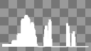
absolute linear RGBA difference ×16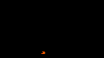
MAE RGB 0.000122567 · SSIM 0.999927 · changed pixels 0.119358%
Waveform raster bounds
The declared output includes the stroke radius.
audiovis.wave.shape.line-thick20|s1|t5.75|preview|coffmain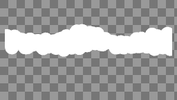
review branch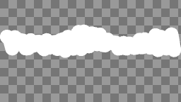
absolute linear RGBA difference ×16 MAE RGB 0.0078676 · SSIM 0.987225 · changed pixels 0.854492%
LUT color space
The LUT texture is explicitly tagged as linear sRGB.
fxcolor.lut.on-flat|s1|t0|preview|coffmain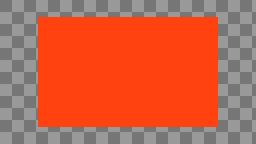
review branch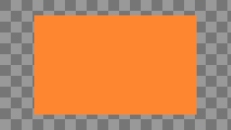
absolute linear RGBA difference ×16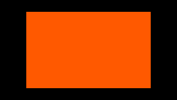
MAE RGB 0.0373195 · SSIM 0.941872 · changed pixels 53.7109%
Convolution bounds
The top and left outsets use the corrected sign.
fxscript.cs.matrix-convolution|s1.5|t0|preview|coffmain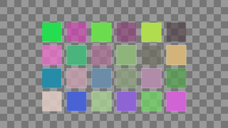
review branch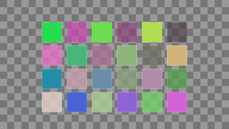
absolute linear RGBA difference ×16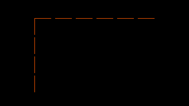
MAE RGB 0.000938576 · SSIM 0.989432 · changed pixels 0.408709%
Displacement map
Premultiplied RGB is no longer multiplied by alpha a second time.
fxspatial.dispmap.channel-red|s1|t0|preview|coffmain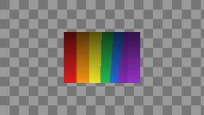
review branch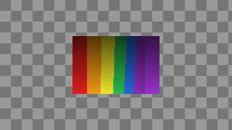
absolute linear RGBA difference ×16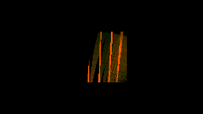
MAE RGB 0.00131104 · SSIM 0.989415 · changed pixels 6.69217%
Disabled shadow caster
The shadow pass observes CastShadows=false.
scene3d.light.shadow-caster-disabled|s1|t0|preview|coffmain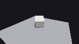
review branch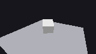
absolute linear RGBA difference ×16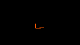
MAE RGB 0.000819219 · SSIM 0.974777 · changed pixels 0.256944%
Full metrics: pixels.csv · complete manifest audit